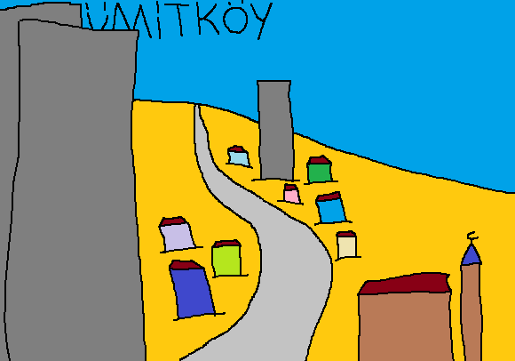

Çayyolu'nun yakınında sıradan bir köy. Şehir merkezinden uzakta ama sitelerden değil. Neyse ki yakınındaki çoğu bina müstakil veya 2-3 katlı. Yeni yapılanlar hariç. Buraya da köy değil şehir diyorlar ama adını hatırlatırım.